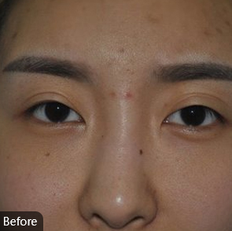
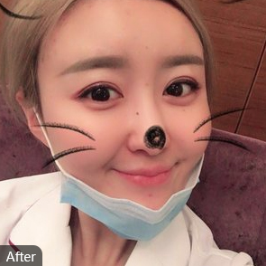
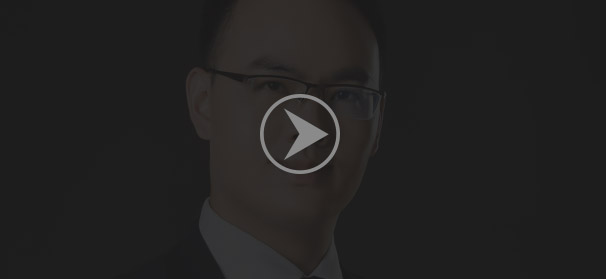

双眼皮
铭医韩式明星眼区别于传统的埋线双眼皮，它不是利用线本身的力量，而是利用线诱导使之粘连产生的双眼皮,所以会更加自然，是不容易消失很有差别化得一种埋线法。
适用人群
单睑眼裂短小，上睑皮肤下垂、雍肿的人
技术优势
运用精细专业的整形器械，采用接近纯自然“解剖复位法”高精缝合，采用仅为头发丝四分之一粗的精细缝合线及进口的逢合针，不仅大幅度降低了传统重睑术后眼部浮肿的程度，而且加快了伤口愈合。短短一周，双眼皮成型自然、皱襞深。
案例对比图


推荐医师：张青松
